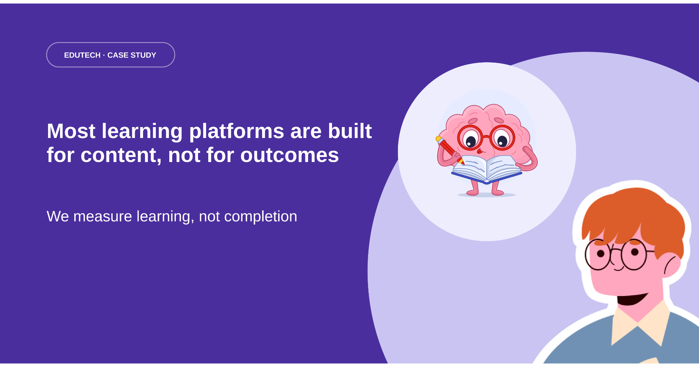
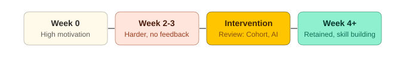
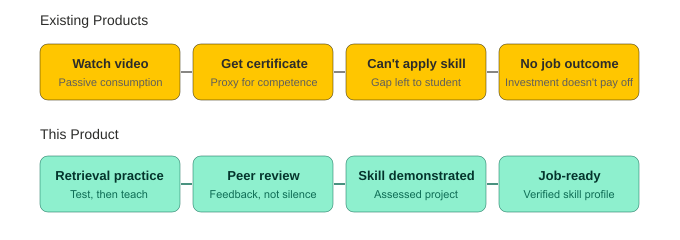
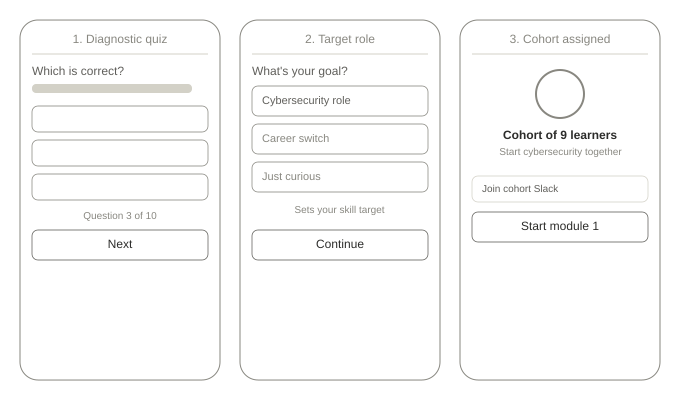
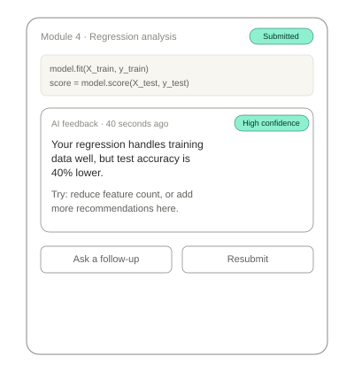
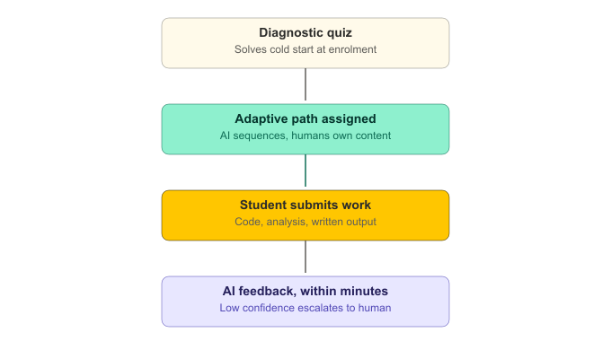

Why most EdTech products measure completion rates instead of learning, and two paths to fix the outcome gap. If a learner finishes a course but cannot apply the skill, has the product succeeded?

The most commonly reported success metric across the EduTech industry is the course completion rate, a measure used to determine whether a student completed the content, rather than what they actually learned. This teardown identifies root causes, friction points in learning platforms, and how I would solve them.
Platforms like Udemy, Coursera, and YouTube have put world-class content within reach of anyone with a smartphone, but the unsolved problem is converting access to content into retained, applicable skills that translate into career outcomes. In emerging markets, the stakes are higher: students pay significant personal income for courses and are often disappointed when they are unable to translate this into a career.
If a learner finishes a course but cannot apply the skill they studied, has the product succeeded? And if not, why do most EdTech platforms still measure success by completion?

Average completion rate across major platforms sits under 5–15%; most learners drop off after week two, when life gets busy, novelty fades, and content gets harder. Source.
Students who received AI-driven feedback within 24 hours completed courses faster and reported higher satisfaction than students who received no feedback. Source.
A dropout spike occurs at weeks 2–3 across nearly all online courses, when course difficulty increases and feedback is absent. Source.
Active retrieval practice improved retention by 50% compared to elaborative studying / concept mapping. Source.
Managers report no visibility into whether employees are actually developing the skills the business needs: logins and completions don't defend an L&D budget to the CFO.
Users complain about generic content sequences that ignore their prior knowledge, pace, and schedule constraints.
Certificates of completion don't connect to a specific job. The gap between 'I completed this' and 'I can do this' is left entirely to the student to prove.
Studying cybersecurity online while doing her NYSC. Highly motivated but can only study at 8pm.
Pain point: Loses momentum after week 2 when content gets harder, and there is no one to ask for help at 9pm.
Core need: Adaptive pacing that meets her where she is, instant feedback on her work, and a clear sight-line between learning and a specific job she can apply for.
Manages learning for 300+ employees. Buys platform licences with no visibility into whether employees are developing skills the business needs.
Pain point: Usage reports show logins and completions but nothing about skill development or business impact, so he cannot defend the L&D budget to the CFO.
Core need: A skills-gap dashboard, team progress visibility, and outcome data connecting employee learning to measurable business performance.
Watching a video is not a learning event; retrieval, application, and feedback are.
Employers increasingly want demonstrated skill, not credentials awarded for finishing a course.
Time-on-platform drives revenue, and more videos watched equals better business metrics, not better learning.
An instructor can coach 30 students well; proper feedback becomes impossible when the same instructor is coaching 5,000.
An improved learning platform with peer accountability, instant applied feedback on submitted work, and adaptive content sequencing.

For V1, I prioritised cohort accountability and peer review over a larger content library, the research is specific: the dropout spike happens at weeks 2–3, exactly when difficulty rises and feedback disappears. A student about to drop out benefits from a human check-in and a scheduled review of what they already learned.
Students are placed in cohorts of 8–10 at enrolment with a shared progress board, weekly check-in prompts, and a group channel. Each learner reviews at least two peers' submissions using specific criteria. Structured peer review delivers roughly 70% of the value of expert review at 10% of the cost, and peer accountability is one of the most reliable drivers of completion in adult education.
Alongside cohorts, I introduced test-first structured content: learners answer questions first, drawing on prior knowledge, then watch the explanation. This improves retention over passive review, at zero additional cost beyond content redesign.

Post-launch, I prioritised the adaptive learning engine and an AI feedback feature that provides specific, actionable feedback within minutes. Both depend on diagnostic and submission data that doesn't exist before real learners have gone through the human-designed version first.
Every learner follows a dynamic path adjusting based on diagnostic results, module performance, time-to-complete, and engagement signals. Students ahead skip scaffolding; students behind get alternative explanations and more practice before advancing. The path is personalised daily.
My concern: a fully AI-personalised competitor could out-market this product's slower, learning-science-first approach even if the underlying retention mechanics are weaker. Still, I would rather delay AI feedback than ship it without a confidence threshold that escalates uncertain outputs to a human reviewer. An LLM analysing student code or written analysis carries real risk of giving misleading guidance to a learner who can't yet catch the error themselves.


Coursera, Udemy, and Duolingo already exist and already claim personalisation. Where this stands out is treating test-first module design as a first-class structural choice and deliberately non-AI-first sequencing, proving the learning-science mechanics work before asking anyone to trust an adaptive model.
Primary: motivated learners between 20–35 making career transitions or upskilling for specific roles.
Secondary: general managers at mid-size companies (200–2,000 employees) with mandated training budgets.
Tertiary: NGOs and development organisations funding skills training programmes in emerging markets.
Employer L&D budgets: sell the platform to the company, distribute licences to employees.
University and bootcamp partnerships: supplement formal degrees with market-aligned skills tracks.
Content creator partnerships: bring existing audiences of motivated learners onto the platform.
| Risk | Likelihood | Impact | Mitigation |
|---|---|---|---|
| AI feedback gives wrong or misleading guidance | Medium | High | Human expert review for flagged outputs; confidence threshold + escalation to human reviewer. |
| Cohort formation at low scale is difficult | High | Medium | Waitlist-based cohort formation; virtual cohorts across geographies. |
| Corporate L&D buyers slow to measure outcomes | Medium | High | Provide pre-built outcome reporting dashboards from day one; don't wait to be asked. |
| Content partners resist test-first redesign | Low | Medium | Provide the evidence base and co-design support; don't mandate the format change. |
If a learner finishes the course but cannot apply the skill, the product has failed regardless of what the dashboard shows. The hardest shift in EdTech PM is measuring what actually matters.
Learners lose momentum when feedback is absent and progress is invisible. Design for the moment motivation drops; that is when it matters most.
The architecture of how learning happens matters more than the content itself. Most EdTech teams invert this.
Better-validated learning paths create more measurable outcomes than a catalogue of 10,000 courses where completion is impossible to achieve.